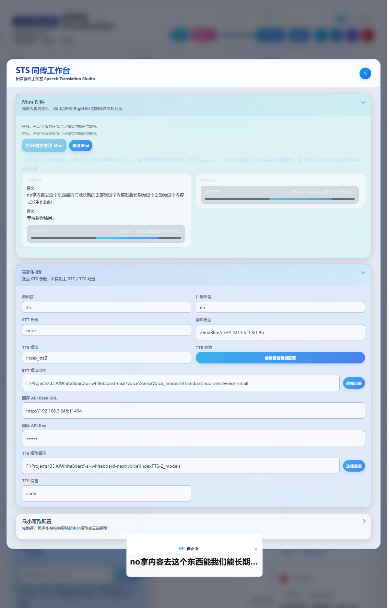
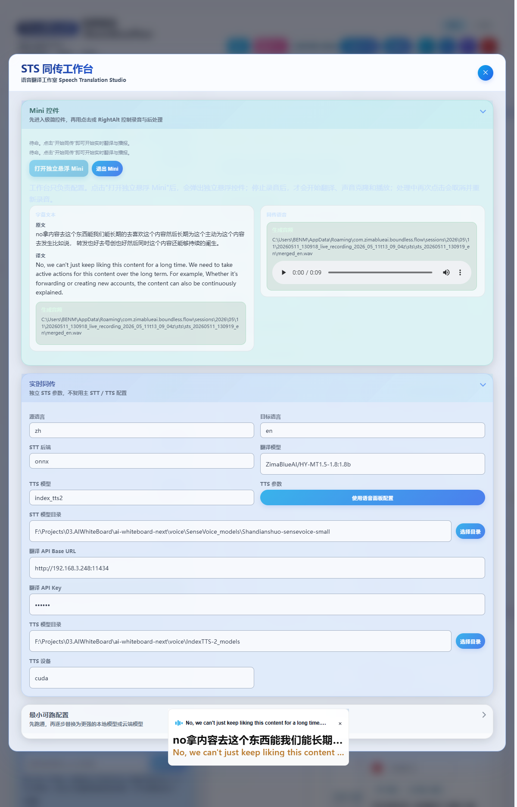

STS 同传工作台
说话 → 实时识别 → 翻译 → 目标语种朗读，一条独立流水线，可保留原始音色。
- 独立配置，不复用主 STT/TTS
- 自动声音克隆
- RightAlt 一键操作
- 浮动 Mini 模式
什么是 STS
STS = Speech-to-Speech。无界音流的 STS 工作台是一个独立的「同声传译」流水线：你说一句中文，几秒后用同样音色、目标语言（英文 / 日文 / 韩文…）把这句话朗读出来。可以用在演讲同传、双语会议、视频配音的草稿生成等场景。
STS 是「先停止录音、再处理」的模式，不是边说边输出的真同步。处理中再次按下 RightAlt 会取消并立刻重新录音，适合一句一句翻。
流水线总览
工作台 UI 速览
引导页跑完后，主面板右上区域点开 STS 图标即可进入工作台。整个面板分三大手风琴块：


- 源语言 / 目标语言
- STT 后端 + 翻译模型 + TTS 模型
- 各路径模型目录、设备、RPC 主机 / 端口
- VoxCPM、火山 TTS 等模型专属参数
- 点「打开独立悬浮 Mini」唤出极简控件
- 底部预览字幕文本 + 同传语音状态
- 主面板只做配置，录音 / 处理在 Mini
- 组合 A：本地 STT + OpenAI 翻译 + 火山 TTS
- 组合 B：本地 STT + OpenAI 翻译 + Qwen3-TTS / Index-TTS2
- 5 步验证清单
- 历史 Job 列表（jobId / 源 → 目标 / 时长 / 状态）
- 双语字幕导出 srt / txt
- 合并音频 mp3 / wav 下载
最小可跑配置（推荐两套）
组合 A · 最快联调
目标：5 分钟内拿到第一条可播放的同传音频。
| 位置 | 取值 | 说明 |
|---|---|---|
| STT 后端 | onnx 或 funasr | 选你已下载好的本地实时模型 |
| STT 模型目录 | 本地 SenseVoice / Fun-ASR-Nano 目录 | 参考 实时 STT 文档 |
| 翻译 Base URL | https://api.openai.com/v1 | 或任意 OpenAI 兼容地址 |
| 翻译模型 | gpt-4o-mini 或 deepseek-chat | 速度优先 |
| TTS 模型 | volcengine_tts | 免本地下载，AppId + Token 即可 |
| 克隆参考 | 自动取本次录音 | 不需要单独选文件 |
组合 B · 声纹克隆优先
目标：让目标语种朗读保留你的音色。
| 位置 | 取值 | 说明 |
|---|---|---|
| STT 后端 | onnx 或 funasr | 同组合 A |
| 翻译模型 | 任一 OpenAI 兼容模型 | — |
| TTS 模型 | qwen3_tts 或 index_tts2 | 需要对应模型目录 |
| TTS 模型目录 | 本地路径 | 参考 TTS 文档 |
| 克隆参考 | 自动取本次录音 + 识别文本 | 不需要单独选音色文件 |
参数说明（节选）
| 字段 | 默认 | 说明 |
|---|---|---|
sourceLanguage | zh | 麦克风识别语种；可选 auto/zh/en/ja/ko/yue/fr/de/es |
targetLanguage | en | 目标语种；与 sourceLanguage 同枚举（除 auto） |
sttBackend | sensevoice | onnx / whisper / sensevoice / funasr 任选一 |
sttChunkIntervalMs | 20 | 每帧送入识别的步长；越小越实时，CPU 占用越高 |
translationApiBaseUrl | — | OpenAI 兼容 base url |
translationApiKey | — | 翻译 LLM 的 API Key |
translationModel | — | 模型名，如 gpt-4o-mini / qwen-plus |
ttsModel | auto | auto / qwen3_tts / voxcpm / index_tts2 / vibevoice / volcengine_tts |
ttsModelDir | — | 本地 TTS 模型目录 |
ttsDevice | — | cuda / cpu / mps |
ttsRpcHost / ttsRpcPort | localhost / 17860 | 本地 TTS RPC 服务地址 |
ttsVoxcpmRuntimeDir | — | VoxCPM 专属运行时目录 |
ttsVolcengine.* | — | 火山 TTS 的 AppId / Token / Cluster / VoiceType |
操作时序与热键
打开浮动 Mini
STS 工作台 → 「打开独立悬浮 Mini」。Mini 控件出现在屏幕底部正中，处理中状态会有动效。
按 Right Alt 开始录音
Mini 进入「录音中」，波形条跳动。
再按 Right Alt 停止
立即进入「处理中」：识别 → 翻译 → 声纹克隆 → TTS 合成。
自动播放
合成完成后 Mini 进入「播放中」，目标语种朗读完毕回到待命态。
处理中再按一次 = 取消重录
觉得这一句不对劲，直接按热键重新录即可，不会等当前作业完成。
常见问题
处理中卡住？ 检查翻译 / TTS 凭据是否填了；可在 Mini 上点取消，回到工作台看「字幕文本 / 同传语音」预览的日志。
没有保留音色？ 确认 TTS 模型选了 qwen3_tts / index_tts2 / voxcpm 之一并指向本地模型目录；volcengine_tts 默认音色由 VoiceType 决定，需要在火山控制台另开声纹克隆音色。
想"边说边出"？ 当前 STS 是「停下来再处理」的同传模式，真正的 streaming 同步翻译由 LLM 端的 Realtime API（如 GPT-Realtime-Translate）支持，未来会以独立子模式接入工作台。
Copyright(c) ZimaBlueAI
齐码蓝智能（大理市）有限责任公司